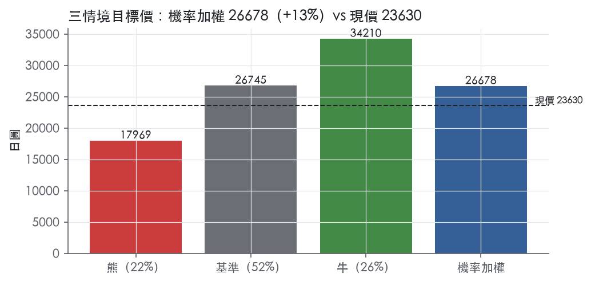
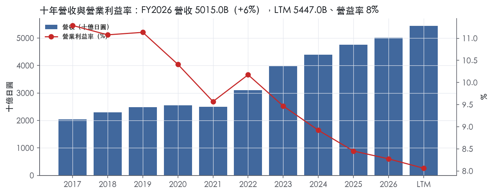
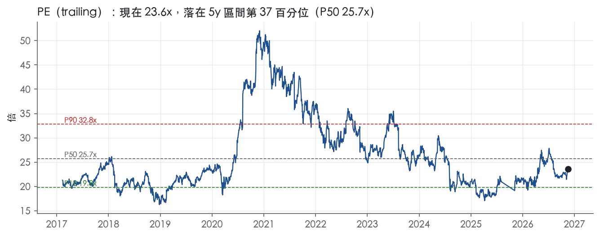
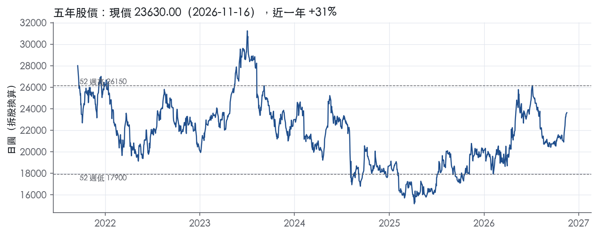

評等總表 › 未分類 › 6367.T
ダイキン工業（6367.T）
利潤率止跌、盈餘驅動看多（複核後收斂）｜評等 加碼｜目標價 26678
評等歷史與財報快評
| 報告日 | 評等 | 目標價 | 當時股價 | 超額報酬 |
|---|---|---|---|---|
| 2026-11-16 | 加碼 | 26,678 | 23,630 | +6.6% |
| 評等 | 加碼（邊界，鄰近中立） |
| 12 個月目標價 | 26678 日圓 |
| 現價 | 23630.00 日圓（2026-11-16） |
| 預期報酬 | 股價 +12.9%＋股息 1.5%＝總報酬 +14.4%；日股門檻 7.8%，超額 +6.6% |
| 估值方法 | P/E 20.7x，套在第 5–8 季的EPS（也就是一年後的未來四季） |
| 三情境 | 熊 17969／基準 26745／牛 34210 |
| 研究流程 | 四位研究員兩輪辯論＋研究總監裁決 |
| 資料來源 | EDINET、TDnet、J-Quants、Yahoo、FRED（全免費） |
目錄
第一章 結論摘要
利潤率止跌、盈餘驅動看多（複核後收斂）（研究總監裁決，四位研究員兩輪辯論後）
評等 加碼（邊界，鄰近中立）｜12 個月目標價 26678 日圓（總監三情境機率加權 26755 與研究員中位數 26601 各半）｜現價 23630.00（2026-11-16）
預期報酬：股價 +12.9%＋股息 1.5%＝總報酬 +14.4%。日股門檻 7.8%，超額 +6.6%，離中立的分界不到三個百分點，屬邊界評等（落在其他級距的機率約四成）。
估值方法：P/E 20.7x，套在第 5–8 季的EPS（也就是一年後的未來四季）。三情境：熊 17969（22%）／基準 26745（52%）／牛 34210（26%）。
什麼會讓研究總監改變看法：FY2027Q3 營益率低於 5.2%、或 FY2028 期初計畫營益率低於 8.3%，營益率路徑退回 8.1% 持平、倍數回到市場持平 19.9x、轉中性；FY2027Q3 營收年增轉負且營業利益年增仍為正，代表槓桿論點錯誤方向，營益率回 R4 的 8.7% 但營收改 R2 路徑；公司公告新一輪以 CP 支應的大型買回且有利子負債比率破 25%，股數驅動改回 −3.5% 但倍數下修。
投資論點
- 營益率止跌：公司計畫營益率 8.4% 是底，盈餘成長帶動報酬，不靠倍數重估。
- 倍數小幅回升：市場付 19.9x，定價營益率續跌；我們給 21x，只小幅上修。
- 營益率再下滑：原材料與物流費上升、美國住宅轉弱；FY2027Q3 營益率低於 5.2% 就轉中性。
關鍵數字
| 過去四季（實際，FY2027Q2） | 未來四季 | 第 5–8 季 | 第 9–12 季 | |
|---|---|---|---|---|
| 營收（B） | 5,447.0B | 5,773.8B | 6,062.5B | 6,365.6B |
| 營收成長 | 15.0% | 6.0% | 5.0% | 5.0% |
| 營業利益率 | 8.1% | 8.4% | 8.6% | 8.8% |
| EPS（日圓） | 1001.80 | 1167.27 | 1292.02 | 1428.88 |
| EPS 成長 | 7.1% | 16.5% | 10.7% | 10.6% |
| 每股股息（日圓） | — | 0.00 | 0.00 | 0.00 |
| P/E（現價） | 23.6x | 20.2x | 18.3x | 16.5x |
| 股息殖利率（現價） | 1.5% | — | — | — |
過去四季為申報數字；預測為研究總監的假設、程式計算。倍數與殖利率都用現價計算，用來看現價對應各期獲利的高低。
三情境
| 情境 | 機率（歷史） | 故事 | 未來四季營收成長 | 第 5–8 季營益率 | 倍數 | 目標價 | 股價漲跌 |
|---|---|---|---|---|---|---|---|
| 熊 | 22%（19%） | 風險表第 1 條原材料、關稅與物流費侵蝕規模效益加第 2 條美國住宅需求疲弱，疊加本行美國下行 GDP 0.3；毛利率回 FY2022 的 34.0%、販管費率上升、買回暫停，倍數落到帶 P10；觸發點 FY2027Q3 營益率低於 5.2% | 0.0% | 7.4% | 18.3x | 17969 | -24.0% |
| 基準 | 52%（53%） | 營收中個位數、營益率自計畫 8.4% 止跌回到 8.6%、已執行買回全數反映，倍數回到帶 P25 | 6.0% | 8.6% | 20.7x | 26745 | 13.2% |
| 牛 | 26%（28%） | 本行美國上行 GDP 2.8，資料中心冷水機與歐洲熱泵量能壓過日圓 145 的換算逆風，FY2028 期初計畫營益率站上 9%，倍數回到帶 P25–P50 之間、因 ROIC 低於資本成本而靠近 P25 | 9.0% | 9.3% | 23.0x | 34210 | 44.8% |
目標價由程式依研究總監的驅動與倍數計算；機率由研究總監給定。括號內是歷史頻率：把這檔股票過去十年 12 個月報酬的波動形狀，置中在基準情境，結果落在各情境附近的比例。

四位研究員用不同方法各自估值，回應研究總監的質疑後交出第二輪，最後由總監逐點裁決。各研究員的主張見第七章，裁決理由見第八章，完整論證見《研究底稿》。
| 立場（一輪→二輪） | 加權目標價（一輪→二輪） | 評等（一輪→二輪） | 第二輪倍數 | 熊～牛目標價 | |
|---|---|---|---|---|---|
| R1 成長與敘事 | 看多→看多 | 26618→26768 | 加碼→加碼 | 23.0x | 18185～32482 |
| R2 資本報酬與價值 | 中性→中性 | 25245→25168 | 中立→中立 | 22.0x | 19002～30371 |
| R3 盈餘品質與下檔 | 中性→中性 | 25961→26433 | 中立→加碼 | 21.0x | 17675～34016 |
| R4 市場隱含預期 | 看多→看多 | 27199→26776 | 加碼→加碼 | 19.9x | 18829～34687 |
| 研究總監裁決 | 看多 | 26678 | 加碼 | 20.7x | 17969～34210 |
目標價由程式依各自的驅動與倍數計算；評等＝機率加權總報酬 − 日股門檻。
第二章 業務概況
公司做什麼、賣給誰
大金工業是全球最大的空調專機製造商之一，核心是「空調・冷凍機事業」加上利潤率更高的含氟化學材料「化學事業」兩大報告分部，另有油機、特機、電子系統等「其他事業」。當期（自 2024 年４月１日至 2025 年３月31日）及本期（自 2025 年４月１日至 2026 年３月31日），空調・冷凍機、化學事業之製造（含工事施工）與銷售均由母公司及集團公司共同經營，關係公司共324 家合併子公司（國內31家、海外293家）及16家權益法公司。客戶面涵蓋住宅用機器、業務用機器（店鋪、辦公室、工廠、資料中心）及船用機器，產品線從家用冷氣、空氣清淨機、熱泵熱水器到大型渦輪冷凍機、模組冷凍箱、空氣過濾裝置都有。FY2026 合併營收 5,015.04B 日圓，過去十年營收規模擴大逾兩倍，主要靠併購（北美 Applied、歐洲 AHT、濾材公司等）堆出來的全球化空調集團。
業務分部與產品
空調・冷凍機事業是絕對主力，FY2026 對外銷售 4,621.13B 日圓，占合併營收約92%，分部利益376.99B 日圓。產品線分住宅用（家用冷氣、空氣清淨機、熱泵熱水器、地暖）、業務用（包裝式空調、全熱交換器、渦輪／螺旋冷凍機、空調箱、低溫冷凍冷藏展示櫃、工業集塵裝置）與船用機器（海運貨昃冷凍裝置、船用空調、船用冷凍機）。化學事業FY2026 銷售281.47B 日圓，占比約6%，分部利益33.09B 日圓，較前期46.12B 日圓明顯下滑，主因含氟樹脂、化成品等毛利波動；主力產品是氟碳氣體（冷媒）、氟樹脂、氟橡膠、半導體用蝕刻劑、撥水撥油劑等。其他事業（油機、特機、電子系統）FY2026 對外銷售112.44B 日圓，分部利益4.93B 日圓，規模小但含防衛省用砲彈誘導彈零件、在宅氧氣醫療機器等特殊業務。FY2026 全集團研發費用150.76B 日圓，其中空調・冷凍機134.10B 日圓、化學12.82B 日圓、其他3.83B 日圓；設備投資總額300.03B 日圓，重點在空調・冷凍機與化學事業的產能及合理化投資。分部之間化學事業利潤率下滑、空調事業利潤率回升，顯示公司正把資源往高收益領域集中。
客戶、地區與通路
地區結構上，北美是最大市場。FY2026 對外銷售按地區：日本809.64B、美國1,786.51B、歐洲857.80B、亞洲大洋洲711.23B、中國471.92B、其他377.94B 日圓，美國單一地區占合併營收約35.6%，遠高於日本本土的約16%。公司未揭露占營收10%以上的單一客戶，但注記揭露北美子公司「大金 Comfort Technologies North America Inc.」銷售占合併銷售比重超過10%（主要損益：銷售1,096.70B、經常利益75.00B、純利56.01B、淨資產645.34B、總資產1,207.14B 日圓）。通路上，國內透過大金 HVAC Solution 東京／近畿／東海等區域銷售公司及大金 Consumer Marketing 等品牌分流住宅與業務用市場，海外則由大金歐洲、大金美洲控股、麥克維爾（中國）、大金印度等區域子公司各自負責製造與銷售。公司同時持有137檔政策保有股（非上市62.7B 日圓賬面值中非上市股9.21B、上市股172.73B 日圓），多為供應商、經銷夥伴或主力往來銀行關係戶，顯示交叉持股仍是其客戶與通路關係的一部分，東證要求下公司表示將檢討並縮減不具合理性的持股。
最近四季發生了什麼
FY2026Q3（2025年12月底）營收1,187.53B 日圓、年增7.9%，營益率下滑至5.2%（is/dv 對應 FY2026Q3）；FY2026Q4（2026年3月底）營收回升至1,348.71B、年增16.4%，營益率回彈至7.9%（FY2026Q4）；FY2027Q1（2026年6月底）營收1,426.81B、年增17.5%，營益率9.2%（FY2027Q1）；FY2027Q2（2026年9月底）營收1,483.96B、年增17.3%，營益率9.4%、淨利92.82B（FY2027Q2）。彙總上半年（2026年4-9月）合併銷售2,910.77B 日圓，年增17.4%，營業利益270.79B 日圓，年增9.8%，經常利益247.19B 日圓，年增2.2%，母公司歸屬中間純利172.96B 日圓，年增7.5%。分部別：空調・冷凍機事業上半年銷售2,699.66B 日圓，年增17.0%，營業利益244.36B 日圓，年增5.2%，公司說明美洲資料中心冷卻需求、歐洲熱浪推升熱泵需求是主要拉力，但美國住宅用空調受關稅通膨與高房貸利率影響需求復甦有限。化學事業銷售158.79B 日圓，年增25.2%，營業利益24.21B 日圓，年增77.3%，公司歸因半導體相關需求回溫與資料中心用氟樹脂拉貨。其他事業銷售52.32B 日圓，年增15.8%，營業利益2.21B 日圓，年增251.3%，主要是油機及防衛省訂單增加。資產負債表上，2026年9月底總資產5,841.53B 日圓，負債2,796.21B 日圓（有利子負債比率自18.8%升至22.8%），淨資產因庫藏股買回等減少至3,045.32B 日圓；營業活動現金流341.02B 日圓，較去年同期增加約97.60B 日圓。公司將FY2027全年計畫上修：營收由前次5,150.00B 上調至5,440.00B（增5.6%）、營業利益由436.00B 上調至455.00B（增4.4%）、經常利益由414.00B 微增至417.00B（增0.7%）、歸屬母公司淨利由278.00B 微增至280.00B（增0.7%），每股盈餘1,006.45日圓，假設下半年匯率1日圓150日圓、1歐元175日圓。
公司自己說的成長引擎與策略
公司在戰略經營計畫「FUSION30」中提出「提供『環境與空氣的新價值』，成為全球持續被選擇的高收益可持續企業」的目標，2026年度（開始年度）將「提升賺錢能力」定為最優先課題，設定六大全社重點主題：推進銷售價格政策與業務力強化、加速差異化商品上市、透過變動費降低強化成本競爭力、全球擴大服務解決方案事業的收益、可視化並徹底檢討固定費結構以降低固定費率、強化被併購公司的獲利能力使投資成果早期最大化、全球集團橫向展開先進案例以強化事業體質。在有價證券報告書的經營方針中，公司強調ROE、ROIC等「率的經營」指標並重視FCF，透過壓縮應收帳款與存貨改善營運資金，用以支撐成長投資與股東回饋。研發面公司點名資料中心用大型冷水機、低GWP冷媒、BMS樓宇管理系統整合，以及與東京科學大學、豐田Woven City、日立合作的AI故障診斷等新技術方向作為差異化引擎。整體來看，大金的成長故事是靠北美與歐洲資料中心冷卻、歐洲熱泵電氣化需求、及半導體相關氟化學拉貨這三條線在撐，中國地產疲弱與美國住宅空調需求遲緩是主要逆風。化學事業上半年利潤率明顯改善（營業利益年增77.3%遠高於營收年增25.2%），但FY2026全年化學分部利益反而較前期下滑，顯示該分部波動性大、對半導體景氣敏感度高。公司上修全年計畫但增幅集中在營收端（+5.6%），獲利增幅遠低於營收增幅（經常利益僅+0.7%），反映原材料與關稅成本壓力正侵蝕擴張帶來的規模效益。

第三章 經濟護城河
結論：窄，趨勢變窄
大金評為窄護城河、趨勢變窄：我們有把握未來 5 年 ROIC 仍高於以日圓計的資本成本，但沒有把握撐到 10 年以上。
護城河的根基有兩項：一是自製壓縮機與冷媒的垂直整合，二是業務用與應用型空調的安裝基礎與服務網。
這兩項足以守住毛利率，卻擋不住營業利益率與 ROIC 連續下滑，所以給不到寬。
優勢來源
成本優勢是第一來源，核心是關鍵零組件與冷媒自製。
集團在泰國設有專責壓縮機的子公司「ダイキン コンプレッサー インダストリーズ」，化學事業本身生產冷媒用氟碳氣體。
研發主軸是讓壓縮機、馬達、變頻器等空調核心技術更上一層，並與東京科學大學設立共同研究據點。
全集團研發費用 150.76B 日圓，其中空調・冷凍機事業 134.10B 日圓。
競爭對手要追上這個研發規模、又同時擁有冷媒產能，門檻很高。
第二來源是轉換成本，集中在業務用與應用型產品。
VRV 系統支援最長 165m 配管。
公司已在北美導入可整合他社設備的開放式 BMS，本期擴大到歐洲。
日本設有專責服務與維修的子公司ダイキンエアテクノ。
資料中心冷水機與二次側空調箱採組合式提案。
設計一旦綁定配管、控制系統與維修合約，更換廠牌的成本遠高於單機價差。
第三來源是無形資產，但我們只算技術型，不算品牌溢價。
主力機種主打「業界頂級的節能性」。
歐洲產品線已對應 F-gas 法規，北美冷水機則採用低 GWP 冷媒。
法規門檻愈高，具備冷媒與機器雙重技術的廠商愈佔便宜。
網路效應與效率規模找不到證據，不列入。
數字上看得到嗎
數字只支持窄、不支持寬：毛利率穩，資本報酬在往下走。
ROIC 十年平均 11.3%、標準差 1.4%；有資料的 9 年中有 7 年高於資本成本代理值 10.1%，平均超額 1.2%。
衝突點有兩個。第一，ROIC 從 13.8%一路降到 9.2%，最新值已低於代理資本成本，也是十年最低。
第二，營業利益率從 11.3%降到 8.3%。
我們仍維持窄、不下修到無，理由有三。其一，毛利率十年平均 34.6%、標準差只有 0.6%；在營收年增 24.7%與 28.1%的通膨期都守住，證明定價權還在，問題出在費用端。
其二，代理資本成本以美國 10 年債 5.1為基準；日本 10 年債只有 2.841，日圓計的門檻更低，日本以外的營收則要用當地門檻檢驗。
其三，日本準則下每年攤銷商譽 51.37B 日圓，壓低帳面報酬。
但下滑還沒止住：FY2027Q2 營益率 9.4%，低於 FY2026Q2 的 9.9%。營收年增 17.3%沒有轉成利潤率擴張，這就是趨勢判為變窄的依據。
什麼會侵蝕它
最大的侵蝕來自併購資產的報酬拖累。
公司把「強化被收購公司的獲利能力，讓投資成果及早最大化」列為重點課題。
空調・冷凍機事業本期認列減損 11.85B 日圓，商譽餘額 258.98B 日圓。
第二是價格競爭與關稅：公司稱中國市場低迷，並表明不仰賴價格競爭；美國關稅政策正衝擊供應鏈。
第三是氟化學的法規風險：化學事業分部利益從 46.12B 降到 33.09B 日圓，公司也在推進不含氟的材料開發。
公司自己點名要降低營收中的固定費比率，等於承認費用結構是 ROIC 下滑的主因。
對估值的含意
目標倍數相對同業應持平、不給溢價；ROIC 與資本成本的差距已被壓縮到接近零，撐不起長期超額報酬的溢價。
現行 P/E 23.6x 已貼近 10 年中位數 23.7x，5 年中位數 25.7x 不宜當作目標錨點。
若營益率連續回到十年平均 9.9%以上，再重新評估溢價與趨勢評等。
量化底稿：報酬率與利潤率的水準與穩定度
| 指標 | 最新 | 十年平均 | 標準差 | 最低 | 最高 |
|---|---|---|---|---|---|
| ROIC | 9.2% | 11.3% | 1.4% | 9.2% | 13.8% |
| 毛利率 | 34.5% | 34.6% | 0.6% | 33.4% | 35.8% |
| 營業利益率 | 8.3% | 9.9% | 1.1% | 8.3% | 11.3% |
| FCF 利潤率 | 5.1% | 5.8% | 2.9% | -0.4% | 10.8% |
| ROE | 9.1% | 11.7% | 2.0% | 9.1% | 15.7% |
程式計算。資本成本代理值（10 年債＋5%）：10.1%；ROIC 平均減資本成本：1.2%；ROIC 有資料的 9 年中，高於資本成本 7 年。
第四章 財務體質與盈餘品質
結論：高品質，現金持續覆蓋盈餘、應計比率為負，僅股東回饋比例偏低與近期因買回庫藏股而上升的槓桿值得留意
現金有沒有跟上盈餘
盈餘有現金支撐，CFO／淨利 LTM 1.96x、近三年平均 1.72x、十年平均 1.53x，三個區間都是綠燈。FCF／淨利 LTM 1.13x、近三年 0.85x、十年 0.88x，近三年因資本支出比重上升曾逼近門檻但仍維持綠燈。應計比率（(淨利−CFO)／平均總資產）LTM −4.7%、近三年 −3.8%、十年 −2.9%，三個區間都是負值，代表盈餘不是靠應計項目堆出來，反而是現金流優於淨利認列。 對照原文數字，FY2026 營業活動現金流 465.85B，較前期減少，主因是銷售債權（受取手形、売掛金及契約資産）增加；投資活動現金流出 322.24B；財務活動現金流出 156.38B；加計匯率影響後現金增加 48.42B。 半年報（H1 FY2027）CFO 為 341.02B，較去年同期增加 97.60B，主因是支付票據與應付帳款增加；但財務活動現金流出因買回庫藏股擴大至 196.21B，當期現金及約當現金減少 44.28B。這筆現金下滑是資本配置（買回庫藏股）造成，不是營業面現金轉換變差。
公司調整了什麼（GAAP 與非 GAAP 的差距）
大金沒有揭露美式「非 GAAP 調整後 EPS」，而是日本準則的三層利潤瀑布：營業利益→經常利益→特別損益→純利益。FY2026 營業利益 414.99B（＋3.3%）；營業外損益為 −6.82B，較前期改善 28.40B，主因是通膨會計調整額（インフレ会計調整額）增加，使經常利益跳升至 408.17B（＋11.4%），高於營業利益成長幅度。通膨會計調整主要來自土耳其、阿根廷等高通膨子公司的非現金重估項目，方向可正可負、波動大，不是本業經營成果，我認為估值應該以營業利益而非經常利益為主軸。特別損益方面，FY2026 因減損損失增加，特別損益由上年度惡化 14.19B 至 −4.54B，最終親會社股東淨利 275.23B（＋4.0%）。 H1 FY2027 通膨會計調整額從前期收益 5.98B 轉為當期費損 2.55B，方向逆轉，佐證這項目波動性高、不該視為常態盈餘。特別利益合計 6.20B（含投資有價證券出售益 1.98B、關係企業清算益 2.09B、退休金制度變更益 2.12B），特別損失合計 2.17B（含減損損失 1.24B、固定資產處分損 0.92B），淨額對比營業利益 270.79B 規模很小，不影響整體評等。
資產負債表與資本配置
FY2026 自有資本比率由 54.6% 升至 55.9%，有利子負債比率 19.2% 降至 18.8%，資產負債表在 FY2026 年末仍穩健。但 H1 FY2027 因商業本票（コマーシャル・ペーパー）增加與買回庫藏股，有利子負債比率升至 22.8%，淨資產因買回庫藏股而減少 271.22B 至 3,045.32B，庫藏股科目從 1.18B 暴增至 350.51B，顯示公司在半年內啟動大規模回購。 量化底稿顯示淨負債／EBITDA LTM 0.68x、近三年 0.28x、十年 0.38x，槓桿絕對水準仍低，但 LTM 已明顯高於三年與十年均值，方向是向上。利息保障倍數 LTM 10.5x、近三年 9.57x、十年 20.5x，都在綠燈區但十年均值遠高於近期，反映近年負債規模擴大、利率墊高利息支出。公司自揭的利息保障比率（營業現金流／利払い）FY2022–2026 為 27.7、7.8、9.0、11.9、12.0 倍，口徑與量化底稿不同（用現金流而非營業利益），但同樣顯示近五年付息能力維持在穩健區間，沒有惡化跡象。 稀釋股數年變動 LTM −1.1%、近三年與十年均 0.0%，代表回購已開始淨減少在外股數。股利加回購／淨利 LTM 34.7%、近三年 32.3%、十年 27.0%，低於綠燈門檻 50%，但方向是逐年上升，配合 H1 FY2027 的大規模庫藏股買回，可以預期下一期這項比率會明顯跳升。
紅旗逐條說明
計分表八項裡七項都是綠燈，沒有紅燈，程式也沒有標出額外紅旗。唯一的黃燈是股東回饋比率（股利＋回購）／淨利，LTM 34.7%、近三年 32.3%、十年 27.0%，低於綠燈的 50% 門檻。這不是現金或盈餘品質問題，而是大金過去偏向保守的資本配置政策，有報明確說明「配當性向の水準を意識しつつ、安定性を重視しながら、継続的な増配の実現に努めてまいります」，屬於政策選擇而非盈餘認列問題。半年報顯示自己股式從 1.18B 跳升到 350.51B，代表公司已經在加碼回購，下一期股東回饋比率可望由黃轉綠，這個黃燈應視為「已在改善中」而非真問題。 除了計分表本身的黃燈，MD&A 裡的通膨會計調整額（見上節）雖不在量化計分表內，但波動方向在一年內逆轉（FY2026 營業外收益增加 28.40B、H1 FY2027 轉為費損 2.55B），屬於會計口徑（高通膨子公司重估）造成的假警報，不是本業惡化，估值時應排除這項雜訊。H1 FY2027 有利子負債比率從 18.8% 升到 22.8%是另一個觀察點，但量化底稿的淨負債／EBITDA 仍在 0.68x 的低水位，尚未進入槓桿限制倍數的區間，屬於資本配置選擇造成的暫時性上升，不是財務體質惡化的紅旗。
對估值的含意
GAAP／J-GAAP 淨利可以直接採用，不需要因盈餘品質打折，現金轉換持續 ≥1 且應計比率為負是支撐。經常利益因通膨會計調整波動較大，估值模型建議以營業利益為核心利潤指標，經常利益只作參考。槓桿目前仍低（淨負債／EBITDA 0.68x），尚不足以限制估值倍數，但 H1 FY2027 買回庫藏股推升有利子負債比率至 22.8%，若回購規模持續擴大，下一次評等時需重新檢視槓桿對倍數空間的壓縮。
量化底稿：盈餘品質計分表
| 項目 | LTM | 近三年 | 十年 | 燈號 | 規則 |
|---|---|---|---|---|---|
| 營業現金流／淨利 | 1.96x | 1.72x | 1.53x | 綠 | ≥1.00x 綠、<0.80x 紅 |
| 自由現金流／淨利 | 1.13x | 0.85x | 0.88x | 綠 | ≥0.90x 綠、<0.60x 紅 |
| 應計比率（(淨利−CFO)／平均總資產） | -4.7% | -3.8% | -2.9% | 綠 | ≤0.0% 綠、>5.0% 紅 |
| SBC／營收 | — | — | — | — | ≤3.0% 綠、>8.0% 紅 |
| 淨負債／EBITDA | 0.68x | 0.28x | 0.38x | 綠 | ≤1.50x 綠、>3.00x 紅 |
| 利息保障倍數（營業利益／利息） | 10.5x | 9.57x | 20.5x | 綠 | ≥8.00x 綠、<3.00x 紅 |
| 稀釋股數年變動 | -1.1% | 0.0% | 0.0% | 綠 | ≤0.0% 綠、>3.0% 紅 |
| （股利＋回購）／淨利 | 34.7% | 32.3% | 27.0% | 黃 | ≥50.0% 綠、<0.0% 紅 |
程式計算；燈號以 LTM（無則近三年平均）判定。
第五章 主要風險
結論：最大的風險是原材料與關稅成本上升侵蝕擴張帶來的規模效益，獲利增幅遠低於營收增幅的裂口若持續擴大，EPS 成長將明顯弱於股價隱含的樂觀假設。
五大風險表
| 風險 | 觸發指標（看什麼數字、在哪裡看） | 對 EPS 的影響方向與粗略幅度 | 未來 12 個月發生機率（高／中／低） | 出處 |
|---|---|---|---|---|
| 原材料（銅、石化部材）與美國關稅成本上升，侵蝕規模效益 | 每季決算短信的營業利益年增率 vs 營收年增率缺口；上半年營收年增17.4%但經常利益僅年增2.2% | 方向：負；上半年營收與經常利益成長裂口達約15個百分點，若持續，全年EPS上修幅度將遠低於營收上修幅度（公司上修營收+5.6%，但EPS僅上修至1,006.45日圓，增幅遠小於營收） | 高 | |
| 美國住宅用空調需求復甦遲緩（關稅通膨＋高房貸利率＋地緣政治不確定性） | 美洲地區分部銷售年增率；決算短信「米州」段落措辭（「限定的」「回復は限定的」） | 方向：負；美國子公司DCTNA銷售占合併銷售超過10%（有報關係會社揭露），北美需求疲弱直接拖累空調・冷凍機事業（占合併營收約92%）主力市場 | 高 | ／ |
| 中國不動產不景氣導致中國市場需求大減速 | 中國地區分部銷售年增率（短信每季揭露）；中國不動產投資／銷售面積等官方數據 | 方向：負；短信明確寫「不動産不況の影響により需要が大きく減速」，但靠匯率正效果與販售施策維持營收正成長，若匯率轉負則缺口會顯現 | 中 | |
| 化學事業（氟化學）對半導體景氣高度敏感，波動性大 | 化學分部營業利益季度變化；半導體資本支出／庫存周期指標 | 方向：雙向，波動大；FY2026全年化學分部利益較前期下滑（46.12B→33.09B），但FY2027上半年化學分部營業利益年增77.3%，顯示該分部對景氣循環的槓桿效果遠高於空調主業 | 中 | ／ |
| 匯率（日圓、歐元兌日圓）波動影響換算後營收與成本 | 日圓兌日圓、歐元兌日圓實際匯率 vs 公司全年計畫假設匯率（1日圓150日圓、1歐元175日圓） | 方向：日圓貶值對營收與獲利換算有利，升值則不利；公司計畫假設匯率已明確揭露，可直接與現行匯率（usdjpy 158.23，2026-11-06）比較追蹤 | 中 |
逐條說明
原材料與關稅成本上升侵蝕規模效益是本期最明確、也最容易被量化監測的風險。上半年（2026年4-9月）合併銷售年增17.4%，但經常利益年增僅2.2%，純利年增7.5%，顯示成本端吃掉了大部分的營收成長。公司在業績預想修正說明中明確點名「米国関税措置や中東情勢の緊迫化に伴う、ナフサ由来の部材や物流費の上昇、銅をはじめとした原材料価格の上昇」是事業環境不確定性維持高位的主因。全年計畫上修雖然營收增幅達5.6%，但營業利益增幅僅4.4%、經常利益增幅僅0.7%，獲利增幅遠小於營收增幅的裂口在短信的修正表中一目了然。這條風險可持續用每季營收年增率與營業利益／經常利益年增率的裂口來監測，裂口擴大代表成本壓力惡化。
美國住宅用空調需求復甦遲緩是第二大風險，因為美國是大金最大單一市場。短信直言「住宅用空調機器については、米国関税に起因するインフレ圧力や、住宅ローン金利の高止まりに加え、中東情勢の不安定化に伴う経済不確実性の高まりを背景に、需要の回復は限定的なものになりました」。北美子公司DCTNA銷售占合併銷售逾10%，上半年銷售1,096.70B、經常利益75.00B日圓，若住宅用需求持續疲弱，而資料中心冷卻與Applied事業的成長又放緩，北美整體動能將轉弱。目前靠Applied空調與資料中心需求撐住美洲整體銷售成長，一旦AI資本支出周期降溫，這塊支撐也會跟著鬆動。
中國不動產不景氣的影響已在上半年顯現，短信寫明「不動産不況の影響により需要が大きく減速しましたが、販売施策の強化に加え為替のプラス効果もあり、地域全体の売上高は前年同期を上回りました」。這句話本身就說明了營收正成長是「販售施策＋匯率加分」墊出來的，底層需求其實是減速的，一旦匯率效果消失，中國區營收很可能由正轉負。
化學事業波動性值得單獨列出，因為它雖然只占合併營收約6%，但利潤彈性極大。FY2026全年分部利益從前期46.12B下滑到33.09B日圓，但上半年營業利益年增77.3%、遠超過銷售年增25.2%，顯示該分部對半導體庫存周期與資料中心用氟樹脂拉貨的敏感度遠高於空調主業，容易放大合併獲利的季度波動。
匯率風險是公司自己在有報風險因子與短信預測前提中都明確點出的項目。有報寫「連結財務諸表の作成にあたっては、各地域における売上、費用、資産を含む現地通貨建ての項目を円貨換算しております」，短信則明確揭露下半年計畫假設匯率「1米ドル150円、1ユーロ175円」。目前日圓兌日圓158.23（2026-11-06）已高於公司假設的150，若日圓持續強於假設匯率，換算後營收與獲利會比公司計畫更好；但若日圓走弱跌破150，獲利端會承壓，這是可以逐月追蹤比較的明確觸發指標。
公司沒寫、但我們認為該注意的
庫藏股買回規模與資本配置排擠投資的風險：上半年因自己株式取得等，純資產大幅減少（財務活動現金流出196.21B日圓，主因自己株式取得支出增加），有利子負債比率也從18.8%升至22.8%。在東證要求改善PBR與資本效率的大環境下，公司積極買回庫藏股本是合理動作，但若買回規模持續擴大而槓桿同步上升，一旦景氣轉弱、CFO下滑，財務彈性會被壓縮，這是有報風險因子章完全沒提到的財務結構變化，建議每季追蹤有利子負債比率與庫藏股取得金額。
併購整合（商譽減損）風險未被充分量化：有報風險因子第(2)②條只泛泛提到併購後整合可能不如預期，但沒有揭露具體商譽金額或減損敏感度。資料包顯示2026年9月底商譽（のれん）為245.40B日圓，較2026年3月底274.77B日圓已減少約29.4B日圓，公司並未說明減少原因是攤銷、匯率還是減損測試所致。考量公司過去十年靠大量併購（北美Applied、歐洲AHT等）堆高營收規模，若未來某個被併購事業體（尤其是化學或北美Applied以外的小型併購）的經營績效不如預期，商譽減損的潛在衝擊未在公開資料中被量化揭露，建議每季追蹤商譽餘額變動與附註說明。
第六章 市場在定價什麼
現價 23630.00 對應 trailing（過去四季）P/E 23.6x、EV/EBITDA 10.3x、EV/EBITA —、EV/Sales 1.3x、FCF 殖利率 4.9%。主要估值倍數 P/E 現在 23.6x，落在5 年區間第 37 百分位（P10／P50／P90 = 19.8x／25.7x／32.8x）。

把程式的機械基準預測放到現價下，市場付的前瞻倍數是：P/E（未來四季） 19.9x、P/E（第 5–8 季） 17.5x。反推 DCF 顯示市價隱含未來五年營收年成長 7.7%（WACC 9.0%、終值成長 3.0%、FCF 利潤率 5.8%，SBC 不加回）。
| 倍數 | 現在 | 5 年 P10 | 5 年 P50 | 5 年 P90 | 現在分位 | 全期 P50 |
|---|---|---|---|---|---|---|
| P/E | 23.6x | 19.8x | 25.7x | 32.8x | 37.3% | 23.7x |
| EV/EBITDA | 10.5x | 9.3x | 12.3x | 16.4x | 35.0% | 12.7x |
| EV/EBITA | 14.6x | — | — | — | — | 14.9x |
| EV/EBIT | 16.3x | 13.6x | 17.5x | 22.7x | 37.4% | 16.7x |
| EV/Sales | 1.3x | 1.2x | 1.6x | 2.2x | 34.1% | 1.7x |
| P/S | 1.2x | 1.1x | 1.5x | 2.2x | 30.9% | 1.7x |
| P/FCF | 20.6x | 20.5x | 34.0x | 3112.0x | 10.1% | 27.1x |
trailing 倍數（股價 ÷ 過去四季）；分位以每個交易日計算。
（日股同業籃尚未建置：評等門檻用日股絕對門檻＝日本 10 年公債＋股權風險溢酬 5%，見首頁。）
事後實現前瞻倍數帶（P/E，2018-11-21..2025-11-19）：P10／P50／P90 = 18.3x／26.3x／31.6x。它是每個交易日的股價除以之後四季實際實現的指標；一年後，今天的第 5–8 季正是那時的未來四季，所以這條帶是 12 個月目標價的同口徑倍數。因為用的是事後實際而非當時預期，過去成長超乎預期的公司這條帶會偏低。
程式的機械基準（成長率從過去四季年增率三年收斂到 6%、利潤率持平）用 事後實現前瞻 P/E P50 估值得到 35524（50.3%），市場現行前瞻倍數（現價 ÷ 基準 未來四季指標）一年後持平，套在基準 第 5–8 季指標得到 26818。這兩個數字只是參考點，不是本報告的目標價；研究員對這個定價的回應在第七章。
第七章 四位研究員的看法
下表是每位研究員第一輪（各自獨立）與第二輪（回應研究總監的質疑後）的結果。目標價全由程式依各自的假設計算。
| 立場（一輪→二輪） | 加權目標價（一輪→二輪） | 評等（一輪→二輪） | 第二輪倍數 | 熊～牛目標價 | |
|---|---|---|---|---|---|
| R1 成長與敘事 | 看多→看多 | 26618→26768 | 加碼→加碼 | 23.0x | 18185～32482 |
| R2 資本報酬與價值 | 中性→中性 | 25245→25168 | 中立→中立 | 22.0x | 19002～30371 |
| R3 盈餘品質與下檔 | 中性→中性 | 25961→26433 | 中立→加碼 | 21.0x | 17675～34016 |
| R4 市場隱含預期 | 看多→看多 | 27199→26776 | 加碼→加碼 | 19.9x | 18829～34687 |
| 研究總監裁決 | 看多 | 26678 | 加碼 | 20.7x | 17969～34210 |
目標價由程式依各自的驅動與倍數計算；評等＝機率加權總報酬 − 日股門檻。
分歧度：第一輪 加權目標價 25245～27199（區間＝現價的 8%）· 倍數 20.5～23x · 立場 看多×2、中性×2；第二輪 加權目標價 25168～26776（區間＝現價的 7%）· 倍數 19.9～23x · 立場 看多×2、中性×2。

| 研究員 | 第二輪主張 | 堅持的理由 |
|---|---|---|
| R1 成長與敘事 | 看多，23.0x P/E；資料中心帶動營收年增 8%。 | 公司計畫匯率 150 偏保守，營收預測不向計畫靠攏。 |
| R2 資本報酬與價值 | 中性，22.0x P/E；ROIC 9.2% 低於資本成本。 | ROIC 下滑是本業變差，不是會計造成；舉債買回不值溢價。 |
| R3 盈餘品質與下檔 | 中性，21x P/E；現金扎實，但 EPS 上修靠買回。 | 營業外損失大於模型假設，模型算出的 EPS 偏高。 |
| R4 市場隱含預期 | 偏多，19.9x P/E 等於市場現價，報酬全靠盈餘。 | 市場錯在營益率；公司計畫已含下半年改善。 |
每位研究員的逐條回應與完整論證見《研究底稿》（6367.T_研究底稿_2026-11-16.docx）。
第八章 研究總監裁決
分歧登記
| 分歧點 | R1 | R2 | R3 | R4 | 什麼資料會分出勝負 |
|---|---|---|---|---|---|
| 營收 y1／y2 | 8／7%：下半年 +10%、FY2028 上半年 +6.5% | 6／5%：兩段各 +6% | 6／5%：上半年含併購與匯率，計畫略低於 LTM | 7／6%：下半年 +5%、FY2028 上半年 +9% | FY2027Q3 營收年增（2027-02 短信）；FY2028 期初計畫（2027-05） |
| 營益率 y2 | 8.7%：化學回升、降固定費 | 8.4%：上半年營運槓桿為負 | 8.4%：以計畫起步、小斜率 | 8.7%：市場錯在利潤率 | FY2027Q3 營益率對去年 5.2%；FY2028 計畫營益率 |
| 股數變動 | −1.0%：不假設重做 | −3.5%：已執行買回機械反映 | −2.5% | −2.0%：舉債買回難重複 | FY2028 計畫 EPS 與淨利增幅差；新買回枠決議 |
| 目標倍數 | 23.0x ntm：10 年 P50 下方 | 22.0x ntm：10 年 P10–P50 | 21x q5_q8：事後實現帶 P25 上方 | 19.9x q5_q8：市場持平 | 利潤率下滑敘事是否被 Q3 與 FY2028 計畫推翻 |
逐點裁決
營收：選 R3（6／5／5%）。 四人都接受公司下半年計畫以 1 日圓 150 日圓編製、隱含下半年營收約與去年同期持平（R2、R4 第二輪），而現價 158.23與本行四季後的 153 都比計畫弱，下半年超越計畫沒有爭議。分歧在 FY2028 上半年：它踩在年增 17.4%的基期上，本行日本前提把匯率從順風轉成約 3% 的逆風，美國成長 1.8 低於共識，五、六月熱浪與新規買収的增收效果也落在這個基期。R4 的 +9% 與 R1 的路徑都沒有處理匯率轉向；R1 的下半年 +10% 靠匯率差距撐不起。R2、R3 數字相同，取 R3 是因 y3 5% 貼近基準收斂規則。研究部營收誤差中位數只有 −0.8%，不另外上調。
營益率：選 R4（8.4／8.7／8.9%）。 公司計畫營業利益 455.00B 對營收 5,440.00B，起點已高於 FY2026 的 8.3%，而上半年 270.79B 之後的下半年計畫，對照去年 Q3 5.2%、Q4 7.9%本身就含改善。R2 把上半年「營收 +17.4%、營業利益 +9.8%」的負槓桿外推到 Q5–Q8，缺的是成本會繼續惡化的證據：本行前提的銅 14,473 位在第 100 百分位且風險偏下，WTI 回到 88，Q5–Q8 的投入成本比較可能是紓解；化學上半年營業利益年增 77.3%、資料中心 Applied 與服務的組合在往高收益走。紀錄也站在 R4 這邊：營業利益誤差中位數 R4 −0.8%，R2 −4.8%、R3 −3.3%，研究部整體系統性低估，8.4% 應向上修。我不跟 R1 走到 9.0% 以上、也不用十年平均 9.9%，因為營益率從 11.3%降到 8.3% 是九年趨勢，止跌與回升是兩件事。
股數：選 R3（−2.5%）。 這個驅動一個數字套三年，主尺又在 Q5–Q8。自己株式從 1.18B 增到 350.51B、CP 從 28.39B 增到 158.63B；公司計畫 EPS 1,006.45 對前期 939.92，淨利卻只從 275.23B 到 280.00B，已執行的買回會把 NTM 平均股數壓下去，R1 的 −1.0% 低估了這段。R2 的 −3.5% 說的是 NTM 機械效果，但套到 y2、y3 等於每年再做一次以 CP 支應、超過 LTM FCF 325.00B扣股利後能力的買回，沒有公告支持。R4 的 −2.0% 是「只有已執行」的下限；FUSION30 與東證要求下，以上半年 CFO 341.02B支應的溫和續買比零更可能，取 R3。
倍數：選 R3（21x，eps@q5_q8）。 劇本主尺是 q5_q8，事後實現前瞻帶可直接比較；R1、R2 的 ntm 口徑倍數扣掉一年盈餘成長後，落在和 R3 相近的區間，真正的分歧只是市場持平 19.9x 對 P25 20.7x。市場持平 19.9x 的分母是基準 NTM EPS 1190.41；我們的 NTM EPS 低於基準（成長下修大於利潤率上修），以我們的盈餘看，市場現在付的前瞻倍數已略高於 19.9x，21x 只是小幅上修，不是重估故事。小幅高於持平的理由：市場停在帶的 P10–P25，定價的是利潤率繼續下滑，而 FY2027 計畫與下半年改善、加上半年內買回 350.51B 的資本配置轉向，足以把倍數推回 P25。不取 10 年 P50 23.7x 與帶 P50 26.3x：ROIC 從 13.8%降到 9.2%、低於資本成本代理 10.1%，護城河章判「窄、趨勢變窄、不給溢價」；10 年 P50 又形成於 FY2024–26 EPS 停滯而股價上行的期間。R4「沒有重估證據」的缺口在分母。四人第二輪都已刪掉 JGB 壓倍數的理由，沒有利率重複計算。
漂移與總經偏離。 不退回任何第二輪修正。R3 靠攏比例 72%，但變動全來自我要求的口徑修正（營業外損失移出營益率、熊情境毛利率以十年統計校準），附公司計畫與量化底稿證據，是方法修正不是靠攏；R2 股數改回基準有資產負債表新證據；R4 倍數下修來自我的 E1。四人都沒有提出 macro_deviations，匯率 153、美國成長 1.8、銅 14,473、WTI 88 全依本行前提，我不新增。要註明：對大金，日本前提的下行路徑日圓 160 是換算順風、上行路徑 145 是逆風，三情境匯率都停在基準 153，差異全由量與利潤率驅動。
最終假設與目標倍數
與機械基準不同的驅動：
- rev_growth 6.0／5.0／5.0%（基準 12.0／9.0／6.0%）：LTM 的 17% 含匯率順風、歐洲熱浪與併購；下半年計畫持平但匯率 150 偏強，FY2028 起匯率轉逆風、美國成長 1.8。
- op_margin 8.4／8.7／8.9%（基準 8.1% 持平）：計畫 455.00B／5,440.00B 為起點，銅與油價風險偏下，化學與 Applied 組合改善。
- share_change_pct −2.5%（基準 −3.5%）：已執行買回全數反映，續買以 FCF 為限。
- capex_pct_rev 4.8%（基準 4.4%，取 R2）：年度表 FY2024–FY2026 資本支出／營收 5.5%、5.2%、4.2%，FY2026 設備投資 300.03B，只影響 FCF 交叉驗證。
- 營業外：基準持平 −25.7B，對照計畫經常利益 417.00B／營業利益 455.00B 與上半年 247.19B／270.79B，程式 EPS 略偏高。沒有對應驅動，以主張 5 驗證；幅度與研究部營業利益低估紀錄（總監 −2.4%）方向相反、量級相近，不另調整。
目標倍數 21x，套 eps@q5_q8，錨在事後實現前瞻帶 P25 20.7x 上方、市場持平 19.9x 之上、10 年 trailing P50 23.7x（ntm 口徑）之下。日股同業籃尚未建置，相對同業依護城河章「持平、不給溢價」處理，門檻用 7.8%。
三情境與機率
| 情境 | 機率 | 來源 | 驅動與倍數 | 故事 |
|---|---|---|---|---|
| 牛 | 28% | R4 | 營收 9／8／6%、營益率 8.7／9.3／9.6%，23.5x | 本行美國上行 GDP 2.8，資料中心冷水機與歐洲熱泵量能壓過日圓 145 的換算逆風；FY2028 期初計畫營益率站上 9%，倍數回到帶 P25–P50 |
| 基準 | 52% | 總監 | 上節假設，21x | 成長中個位數、利潤率止跌回升，倍數小幅回到 P25 |
| 熊 | 20% | R3（倍數 18x 微調至帶 P10 18.3x） | 營收 0／2／3%、營益率 7.4／7.4／7.6%、股數 −1.0%，18.3x | 風險表第 1 條原材料、關稅與物流費侵蝕規模效益、第 2 條美國住宅需求疲弱，疊加本行美國下行 GDP 0.3；毛利率回 FY2022 的 34.0%，商譽攤銷 51.37B 與經銷支援使販管費率上升，買回暫停；觸發點 FY2027Q3 營益率低於 5.2% |
熊倍數採 R4 的 E2 理由微調：帶的 P10 已含衰退期盈餘下修，再往下是重複計算。機率從歷史基準率出發：R4 的牛在他的基準下量到 +32%、R3 的熊量到 −33%（程式結果表），程式對兩人的歷史對照分別是 28／54／18 與 25／52／23；我的情境取自他們、距離介於兩者之間，取 28／52／20。牛高於熊，與這檔股票的偏態（≥+10% 為 34%、≤−10% 為 30%）一致；熊比對照略高，因風險表第 1 條的剪刀差已在上半年出現；牛比對照略低，因 9% 以上要逆轉九年趨勢。研究部過去 22 份報告熊皆高於牛，本份依基準率修正。
我們與市場的差距在哪
市場對基準 NTM EPS 付 19.9x、停在帶的 P10–P25，持平參考點總報酬 +15.0%，反推 DCF 隱含五年營收成長 7.7%。我們在成長上比市場更保守，差距不在量；差在利潤率——市場外推九年下滑，我們認為 FY2027 計畫的 8.4% 是底、Q5–Q8 回到 8.7%，再加倍數從 P10–P25 小幅回到 P25。立場看多，程式評等為加碼，兩者一致；超額報酬來自 Q5–Q8 盈餘成長與 1.5% 股息，倍數貢獻小，營業外造成的 EPS 偏高不足以翻轉評等。
可證偽主張
- FY2027Q3 營業利益率 ≥ 6.0%（去年 5.2%）——2027-02-15，。
- FY2027 營業利益 ≥ 465.00B（計畫 455.00B）——2027-05-20，。
- FY2027 營收 ≥ 5,550.00B（計畫 5,440.00B）——2027-05-20，。
- FY2028 期初計畫營業利益／營收 ≥ 8.6%——2027-05-20，決算短信 FY2028 業績予想。
- FY2027 營業利益減經常利益 > 25.7B，確認程式 EPS 略偏高——2027-05-20，決算短信 FY2027 営業利益－経常利益。
總監複核：裁決落在研究員區間外
程式檢查發現，總監最初裁決的機率加權目標價 27662 落在四位研究員第二輪區間 25168～26776 之外，可能是逐點選邊的拼湊效應。總監複核後決定修正（最終 26755）：營益率從 R4 取但營收從 R3 取，少一個百分點的量卻保留含營運槓桿的利潤率，y2／y3 營益率下修至 8.6／8.8%；倍數 21x 高於自己敘述的 P25 錨 20.7x，且同時拿了 R4 的利潤率上修與 R3 的倍數上修，改為 20.7x；牛情境取最樂觀者再疊 23.5x、熊機率低於全體研究員，牛倍數改 23.0x、機率改 26／52／22。
檢查結果：組合有兩處傾斜，一處機制不完全相容，revise。
- 營益率與營收的配對不相容。 我選了 R3 的營收（6／5／5%）卻配 R4 的營益率（8.4／8.7／8.9%）。R4 的 8.7% 建立在 7／6% 的營收上，含營運槓桿；R3 以相同營收路徑只給 8.4%。少了一個百分點的量，固定費攤薄跟著少，上半年「營收 +17.4%、營業利益 +9.8%」已顯示槓桿並非自動為正。銅與油價紓解、化學與 Applied 組合改善的論點仍成立，所以不退回 8.4%，但 y2 下修至 8.6%、y3 至 8.8%，把量的差額扣掉。
- 倍數與故事不一致。 我的故事寫「小幅回到帶 P25」，但 P25 是 20.7x，我卻給了 21x——比自己敘述的錨還高。更關鍵的是，R4 持有與我相同的利潤率上修，卻刻意停在市場持平 19.9x，理由是「沒有重估證據」；R3 給 21x 時配的是較低的利潤率。我同時拿了 R4 的利潤率和 R3 的倍數，這就是逐點選邊的拼湊：兩人各自的看多理由只用了一個，我兩個都用。修正為 20.7x，與敘述一致，也落在「我們較低 EPS 下的市場持平（略高於 19.9x）」與 P25 之間。
- 情境全往一邊傾斜。 牛情境取四人裡最高的 R4 牛，再疊 23.5x，得出比所有研究員都高的牛值；基準高於四位研究員的基準；熊機率 20% 低於四位研究員（21–27%）。單看每點都有理由，合起來就是三個情境都比小組偏多。修正：牛倍數降到 23.0x——ROIC 9.2% 低於資本成本代理 10.1%，帶 P25–P50 的範圍內應靠近 P25 而非中點；機率改為 26／52／22，熊回到研究員區間內，牛仍高於熊，與這檔股票 ≥+10% 為 34%、≤−10% 為 30% 的偏態一致。
驅動其餘不動：營收 6／5／5% 的匯率與基期論證、股數 −2.5%、資本支出 4.8%、熊情境 18.3x 的 P10 處理，都沒有拼湊問題。立場維持看多，超額報酬仍主要來自 Q5–Q8 盈餘成長與股息，但不再宣稱倍數貢獻超過自己敘述的幅度。
目標價拆解（程式計算）
現價 23630.00 → 點估目標價 26745 → 機率加權目標價 26755 → 目標價 26678，差距拆成五段：成長順延 +3188 日圓（市場現行倍數 19.9x 一年後持平、獲利照機械基準）；倍數差 +1148 日圓（總監倍數 20.7x vs 市場持平倍數 19.9x，同一機械基準預測）；盈餘差 -1221 日圓（總監預測的第 5–8 季EPS 0.0B vs 機械基準 0.0B，同一倍數）；情境不對稱 +10 日圓（機率加權減點估）；研究小組平均 -77 日圓（總監機率加權 26755 與研究員第二輪中位數 26601 各半）。各段相加等於目標價減現價。本階段未接賣方共識，差距以市場隱含預期為對照。
第九章 估值與目標價
驅動假設：機械基準 vs 研究總監
| 驅動 | 機械基準 | 研究總監 | 差異 |
|---|---|---|---|
| 未來四季營收成長 | 12.0% | 6.0% | -6.0 pp |
| 第 5–8 季營收成長 | 9.0% | 5.0% | -4.0 pp |
| 第 9–12 季營收成長 | 6.0% | 5.0% | -1.0 pp |
| 未來四季營益率 | 8.1% | 8.4% | +0.3 pp |
| 第 5–8 季營益率 | 8.1% | 8.6% | +0.5 pp |
| 第 9–12 季營益率 | 8.1% | 8.8% | +0.7 pp |
| D&A／營收 | 4.4% | 4.4% | ＝ |
| 資本支出／營收 | 4.4% | 4.8% | +0.4 pp |
| SBC／營收 | 0.0% | 0.0% | ＝ |
| 稅率 | 29.1% | 29.1% | ＝ |
| 股數年變動 | -3.5% | -2.5% | +1.0 pp |
研究總監只寫偏移，未寫的沿用基準。
研究總監假設下的三年預測
| 期 | 營收 | 成長 | 營益率 | 營業利益 | EBITDA | EBITA | 淨利 | EPS | FCF | 期末淨負債 |
|---|---|---|---|---|---|---|---|---|---|---|
| 未來四季 | 5,773.8B | 6.0% | 8.4% | 485.0B | 740.8B | 485.0B | 325.8B | 1167.27 | 304.5B | 258.4B |
| 第 5–8 季 | 6,062.5B | 5.0% | 8.6% | 521.4B | 789.9B | 521.4B | 351.6B | 1292.02 | 329.2B | 28.8B |
| 第 9–12 季 | 6,365.6B | 5.0% | 8.8% | 560.2B | 842.2B | 560.2B | 379.2B | 1428.88 | 355.6B | -227.3B |
程式依上表的驅動計算；季度用最近四季季節性分攤；不含營運資金變動。
目標價
估值方法：P/E 20.7x，套在第 5–8 季的EPS（也就是一年後的未來四季）。研究總監目標倍數的錨：事後實現前瞻 P/E 帶 P25 20.7x，市場持平 19.9x 之上、10 年 trailing P50 23.7x（ntm 口徑）之下；ROIC 9.2% 低於資本成本代理 10.1%、護城河窄且變窄，不給 P50；複核後由 21x 收斂至敘述所指的 P25 本身。
計算：EPS（第 5–8 季） 1292.02 × 20.7x → 點估目標價 26745（13.2%）；隱含 P/E（未來四季）22.9x、P/E（第 5–8 季）20.7x、EV/EBITDA（第 5–8 季）9.3x、FCF 殖利率（第 5–8 季）4.7%。
總監三情境機率加權目標價 26755，研究員第二輪中位數 26601，兩者各半＝目標價 26678；預期報酬 股價 +12.9%＋股息 1.5%＝總報酬 +14.4%；減評等門檻 7.8%（日股絕對門檻 7.8%（日本 10 年公債 2.84%（2026-11-12）＋股權風險溢酬 5%；日股同業籃尚未建置））＝超額報酬 +6.6% → 評等 加碼（超額 >+15% 買進、+5～+15% 加碼、±5% 中立、−5～−15% 減碼、<−15% 賣出）。同一份資料重開研究小組，超額約有正負四個百分點的雜訊（一個標準差，二十檔實測）；以此估計，評等落在其他級距的機率約四成。超額離中立的分界不到三個百分點，應視為邊界評等。
| 情境 | 機率 | 未來四季成長 | 第 5–8 季成長 | 第 5–8 季營益率 | EPS（第 5–8 季） | 倍數 | 目標價 |
|---|---|---|---|---|---|---|---|
| 熊 | 22% | 0.0% | 2.0% | 7.4% | 981.93 | 18.3x | 17969 |
| 基準 | 52% | 6.0% | 5.0% | 8.6% | 1292.02 | 20.7x | 26745 |
| 牛 | 26% | 9.0% | 8.0% | 9.3% | 1487.41 | 23.0x | 34210 |
第十章 可證偽主張與追蹤點
| 主張 | 驗證日 | 看哪個數字 | 門檻 |
|---|---|---|---|
| FY2027Q3 營業利益率高於去年同期 5.2%，回到 6% 以上 | 2027-02-15 | >= 6.0% | |
| FY2027 全年營業利益超過公司上修後計畫 455.00B | 2027-05-20 | >= 465.00B | |
| FY2027 全年營收超過公司計畫 5,440.00B | 2027-05-20 | >= 5,550.00B | |
| FY2028 期初計畫隱含營業利益率高於 FY2027 計畫 | 2027-05-20 | 決算短信 FY2028 業績予想 營業利益／売上高 | >= 8.6% |
| FY2027 營業利益與經常利益的差距大於基準模型持平值，確認程式 EPS 略偏高 | 2027-05-20 | 決算短信 FY2027 営業利益 − 経常利益 | > 25.7B |
到期由程式結算（第 5 階段帳本）。
附錄 A 年度財務摘要
| 期 | 營收 | 成長 | 毛利率 | 營益率 | EBITDA | 淨利 | EPS | CFO | FCF | ROIC | 淨負債 | 稀釋股數 |
|---|---|---|---|---|---|---|---|---|---|---|---|---|
| FY2017 | 2,044.0B | — | 35.8% | 11.3% | 290.1B | 153.9B | 526.43 | 267.7B | 179.3B | — | 254.1B | 0.3B |
| FY2018 | 2,290.6B | 12.1% | 34.9% | 11.1% | 320.4B | 189.1B | 646.08 | 223.7B | 138.1B | 13.8% | 186.5B | 0.3B |
| FY2019 | 2,481.1B | 8.3% | 35.0% | 11.1% | 348.6B | 189.0B | 645.95 | 250.0B | 164.5B | 12.6% | 207.2B | 0.3B |
| FY2020 | 2,550.3B | 2.8% | 34.7% | 10.4% | 363.3B | 170.7B | 583.22 | 302.2B | 204.1B | 11.4% | 156.9B | 0.3B |
| FY2021 | 2,493.4B | -2.2% | 34.7% | 9.6% | 342.2B | 156.2B | 533.66 | 374.7B | 269.7B | 10.0% | 3.6B | 0.3B |
| FY2022 | 3,109.1B | 24.7% | 34.0% | 10.2% | 431.7B | 217.7B | 743.46 | 245.1B | 131.0B | 11.9% | 4.6B | 0.3B |
| FY2023 | 3,981.6B | 28.1% | 33.4% | 9.5% | 519.8B | 257.8B | 880.05 | 158.9B | -16.2B | 12.1% | 212.3B | 0.3B |
| FY2024 | 4,395.3B | 10.4% | 34.3% | 8.9% | 562.1B | 260.3B | 888.64 | 399.6B | 156.9B | 10.4% | 178.0B | 0.3B |
| FY2025 | 4,752.3B | 8.1% | 34.2% | 8.5% | 599.1B | 264.8B | 903.65 | 514.5B | 268.5B | 10.2% | 154.2B | 0.3B |
| FY2026 | 5,015.0B | 5.5% | 34.5% | 8.3% | 639.8B | 275.2B | 939.14 | 465.8B | 256.8B | 9.2% | 176.6B | 0.3B |
EDINET 有價證券報告書 XBRL（舊年度 US GAAP 公司只有經營指標摘要）；每股數據已依拆股換算到現在股數基準。EBITDA 空白＝該年沒有折舊攤銷（舊年度 US GAAP 公司的 EDINET 摘要沒有這一行）。
附錄 B 季度財務摘要（最近 12 季）
| 期 | 期末 | 推導 | 營收 | 毛利率 | 營益率 | EBITDA | 淨利 | EPS | CFO | FCF | 現金 | 總債務 |
|---|---|---|---|---|---|---|---|---|---|---|---|---|
| FY2024Q2 | 2023-09-30 | 1,130.4B | 35.0% | 10.4% | 159.6B | 72.7B | 248.33 | 157.1B | 98.1B | 617.3B | 860.9B | |
| FY2024Q3 | 2023-12-31 | 1,038.5B | 33.5% | 6.8% | 114.2B | 40.8B | 139.43 | 99.2B | 45.5B | 621.3B | 876.6B | |
| FY2024Q4 | 2024-03-31 | 1,131.7B | 33.5% | 7.6% | 131.2B | 66.5B | 226.87 | 102.1B | 50.0B | 634.0B | 812.0B | |
| FY2025Q2 | 2024-09-30 | — | — | — | — | — | — | — | — | 688.4B | 802.4B | |
| FY2025Q3 | 2024-12-31 | 1,100.2B | — | 6.6% | — | 35.1B | 119.63 | 108.1B | 55.2B | 768.2B | 802.4B | |
| FY2025Q4 | 2025-03-31 | 1,159.1B | — | 7.2% | — | 78.0B | 266.37 | 87.8B | 35.7B | 658.1B | 812.3B | |
| FY2026Q1 | 2025-06-30 | 1,213.8B | — | 10.0% | — | 81.5B | 278.25 | 63.8B | — | 603.4B | 812.3B | |
| FY2026Q2 | 2025-09-30 | 1,265.0B | — | 9.9% | — | 79.4B | 270.93 | 179.6B | — | 680.9B | 862.4B | |
| FY2026Q3 | 2025-12-31 | 1,187.5B | — | 5.2% | — | 34.4B | 117.49 | 102.2B | — | 735.4B | 862.4B | |
| FY2026Q4 | 2026-03-31 | 1,348.7B | — | 7.9% | — | 79.9B | 272.47 | 120.2B | — | 706.5B | 883.2B | |
| FY2027Q1 | 2026-06-30 | 1,426.8B | — | 9.2% | — | 80.1B | 280.37 | 153.2B | — | 677.5B | 883.2B | |
| FY2027Q2 | 2026-09-30 | 1,484.0B | — | 9.4% | — | 92.8B | 331.47 | 187.8B | — | 661.6B | 1,125.0B |
日本財報是年初至今的累計數：單季＝累計相減（Q2＝6 個月−3 個月、Q4＝年度−9 個月）；第 1、3 季多半不揭露現金流量表，單季現金流常空白，LTM 現金流用半年度拼。

附錄 C 資料來源、方法與限制
- 財報：EDINET XBRL（有價證券報告書、半期報告書、2023 年度以前的四半期報告書）＋TDnet 決算短信＋J-Quants 短信摘要（edinet_docs 35、tdnet_tanshin 1、jquants_periods 8）；行情：yahoo (split-adjusted close)；總經：FRED（含日本 10 年公債、日圓兌日圓）；本行總經前提（研究總監 2026-11-01 裁決：通膨黏3%、再升兩碼不降，成長放慢不衰退）。資料截至 2026-11-16，報告建於 2026-11-16。
- 原始文件：10k_item1_business.md（有価証券報告書 FY2026 2026-06-24）；10k_item1a_risk.md（有価証券報告書 FY2026 2026-06-24）；10k_item7_mda.md（有価証券報告書 FY2026 2026-06-24）；10q_mda.md（半期報告書 2026-11-06）；8k_2026-11-05.md（決算短信 2026-11-05）
- 數字規則：正文每個數字都對得回資料包、原文或程式計算；代理不得自行計算；目標價全由程式計算。
- 模型限制：不含營運資金變動；FCF ≈ 淨利 + D&A + SBC − 資本支出；利息費用、股利、買回金額按最近 LTM 持平；淨負債只隨 FCF、股利、買回變動；季度分攤用最近四季的季節性比例，無其他季內假設；EBITA 用最近 LTM 的攤銷／D&A 比例推算；攤銷缺資料時 EBITA = EBITDA × 0；稅率夾在 5%–35%，股數年變動夾在 ±15%；FFO ≈ 淨利 + D&A（NAREIT 推估，預測期不含處分損益與減損）；不是公司公布的 AFFO；有形普通股權益 = 前期 + 淨利 − 股利 − 買回（股利、買回按 LTM 持平）；EPS = 淨利 × 歸屬比例（近 4 季稀釋 EPS × 稀釋股數 ÷ 淨利：扣特別股股利、非控制權益）÷ 年內平均稀釋股數；每股淨值與目標價用期末股數；日股：稅前 ＝ 營業利益 ＋ 經常性營業外損益 -25.7B（日本準則：經常利益 − 營業利益（LTM）），預測期持平
- 拆股：無；歷史股價換算：yahoo split-adjusted。
- 估值段：四位研究員盲審、研究總監挑錯、研究員第二輪回應、總監裁決；本階段未接賣方共識。
- 研究底稿（6367.T_研究底稿_2026-11-16.docx）收錄研究員第一、二輪全文、研究總監第一輪審查、總監引用的證據清單。
- 本報告為建置中版本，用途是驗證機制而非投資建議。
本報告由 equity-desk 多代理系統產出，建置中版本，僅供內部研究與方法驗證，不構成投資建議。所有數字以 datapack.json 為準。